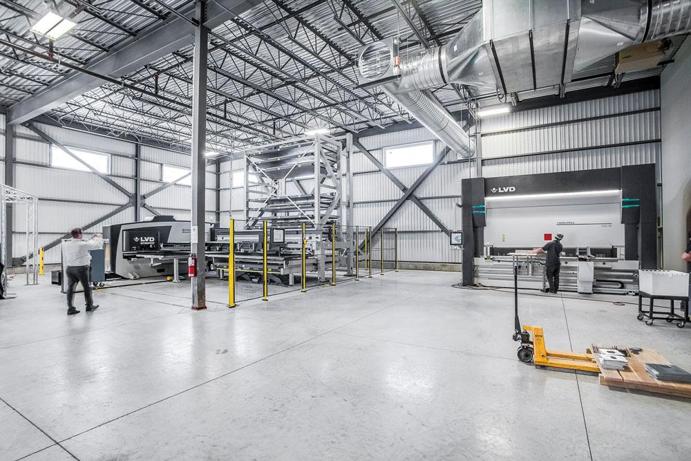
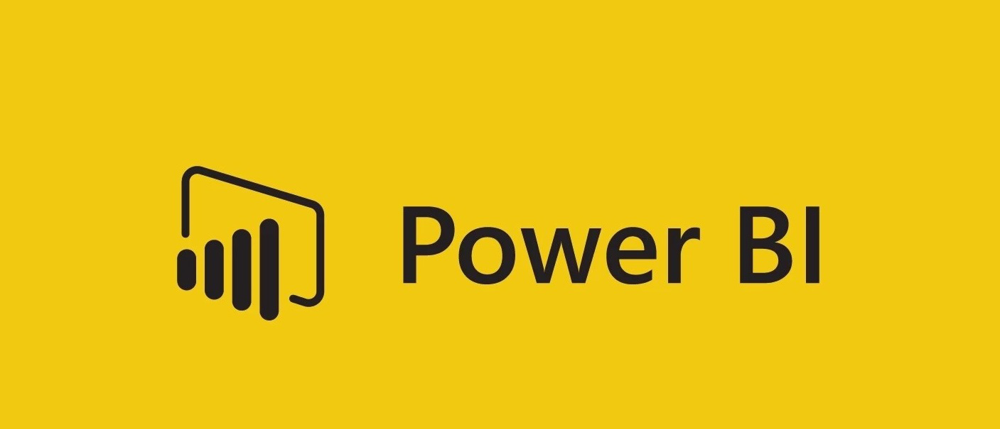

In this SQL code I used common table expressions in Microsoft SQL Server to help keep my code organized while creating a view in the database and creating calculations to find the different lengths in days in the clients schedule and milestones. I pulled the data from various tables then joined them to create the view table with the added columns from the calculations. Creating the view gave the ability to track production schedules with a Gantt Chart in Power BI.
In this python script we used xlwings to read data from excel tools and upload the data to the database. Then used the updated data to update the reporting dashboards. This saved us three hours a day by cutting out the manual work when gathering the data from excel and updating reports.

In this project I created visuals in Power BI from a planning tool data tables to help the supply planning team plan supply and demand for the future.
In this project I helped a logistics team understand the total budget and the storage levels overtime. This helped the team planned for future storage and create shipping schedules for the future.
In this Power BI dashboard I created visuals to be able to see which reports were being viewed and used by our client. This was very helpful for us to understand where the clients attention was from week to week, and helped us better prioitize our work for them.

My Tableau public profile has various vizualizations that I have created from college capstone projects to real world projects.

A collection of various Power BI dashboards that I have created for clients.

I am also a enteprenueur who has recently started a Ecommerce business and i am discovering new ideas and challenges everyday. There is something for everyone in you family! Click on the logo to the left and take a look at the many items that we have designed.